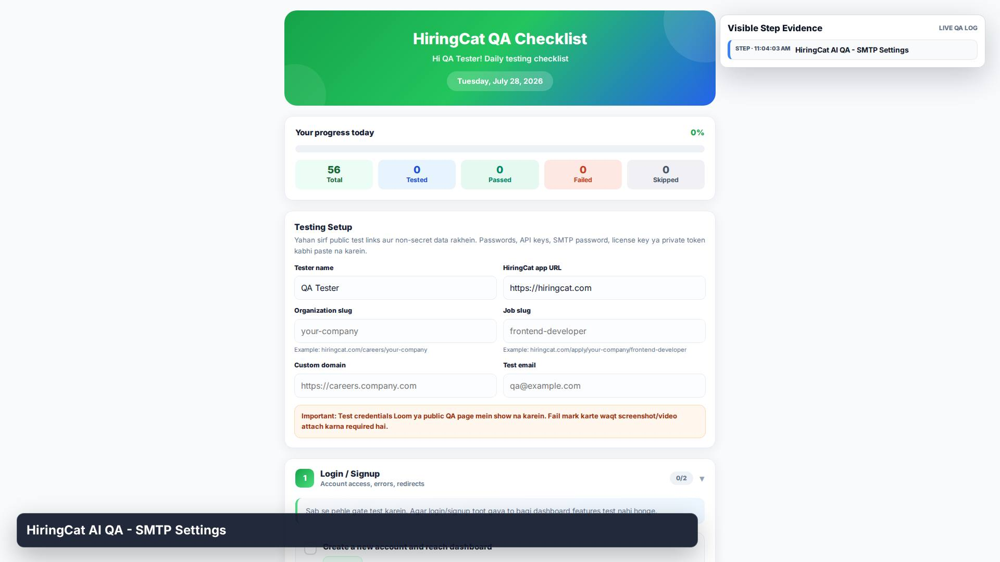
1. STEP
HiringCat AI QA - SMTP Settings

HiringCat AI QA - SMTP Settings
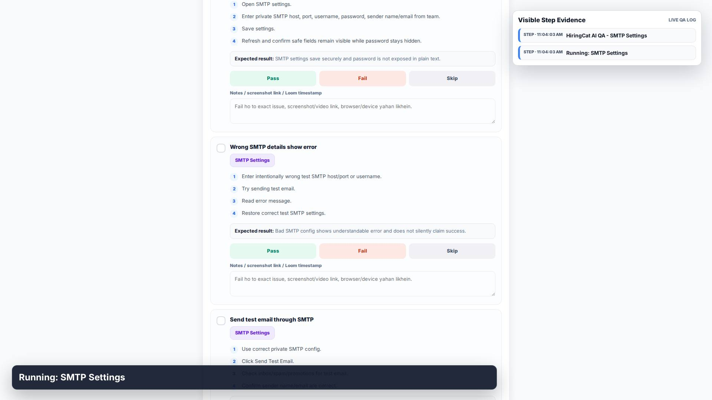
Running: SMTP Settings
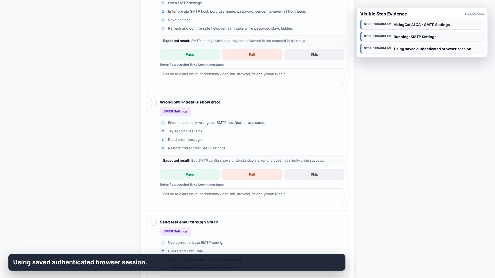
Using saved authenticated browser session.
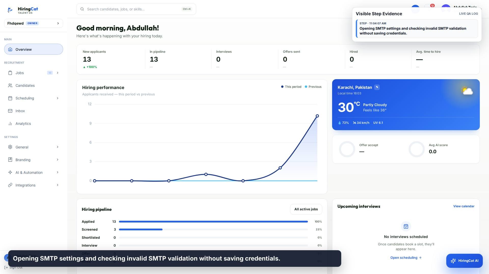
Opening SMTP settings and checking invalid SMTP validation without saving credentials.
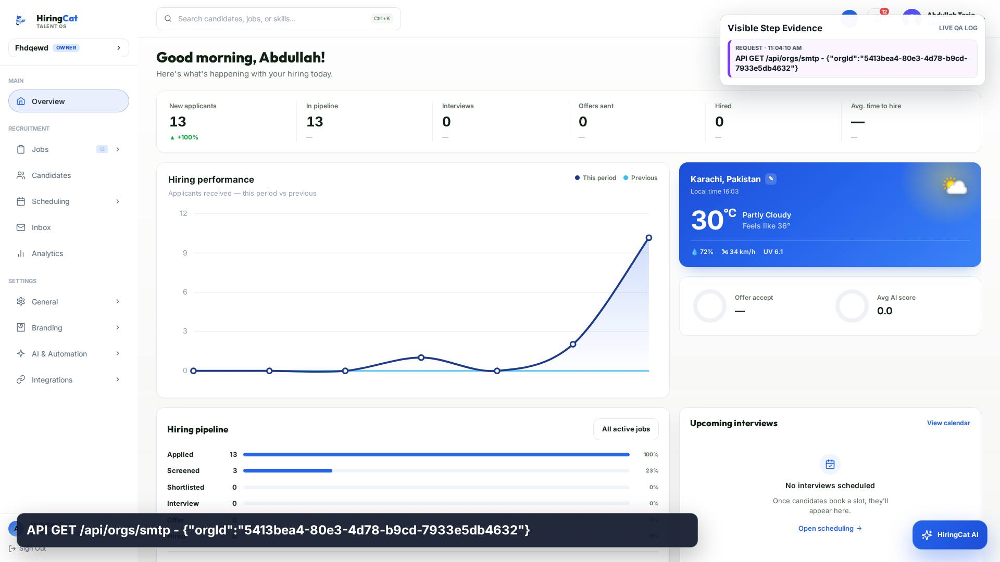
API GET /api/orgs/smtp - {"orgId":"5413bea4-80e3-4d78-b9cd-7933e5db4632"}
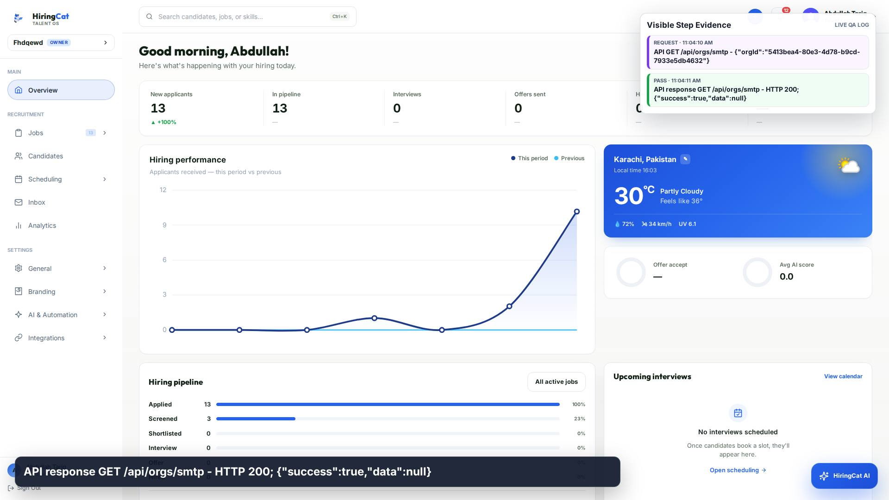
API response GET /api/orgs/smtp - HTTP 200; {"success":true,"data":null}
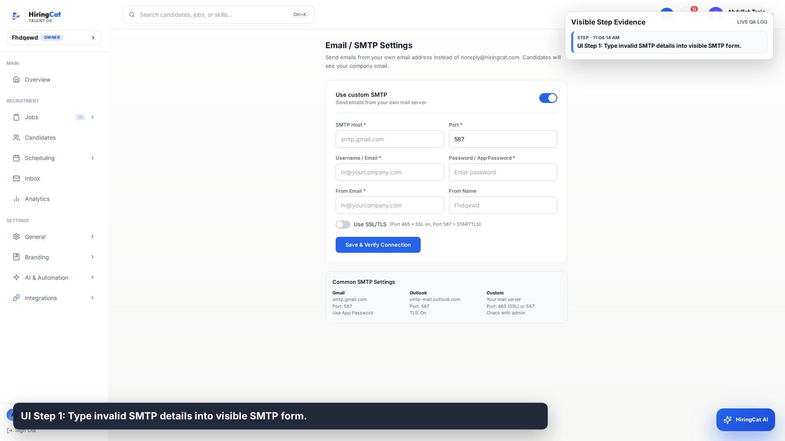
UI Step 1: Type invalid SMTP details into visible SMTP form.
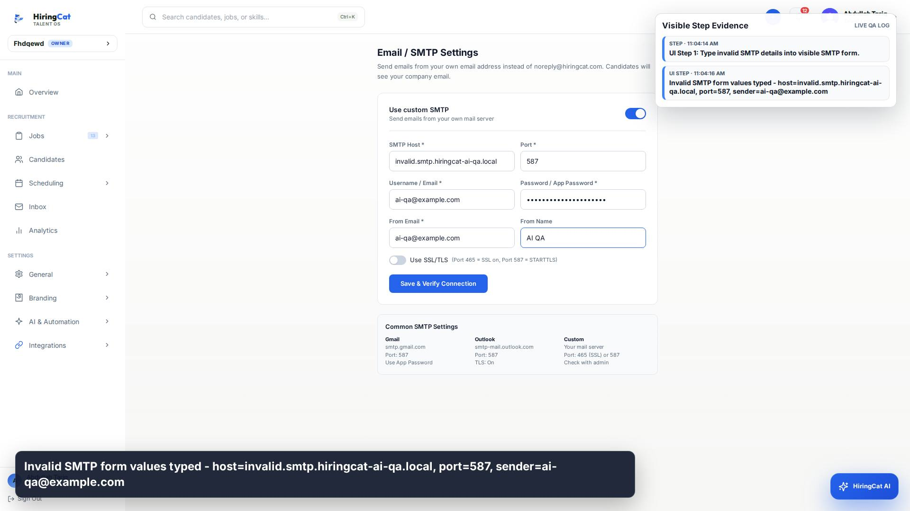
Invalid SMTP form values typed - host=invalid.smtp.hiringcat-ai-qa.local, port=587, sender=ai-qa@example.com
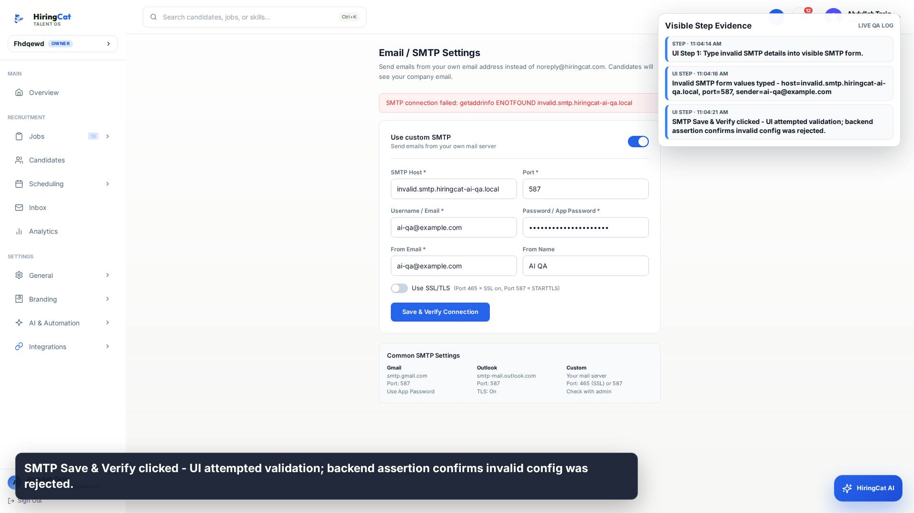
SMTP Save & Verify clicked - UI attempted validation; backend assertion confirms invalid config was rejected.
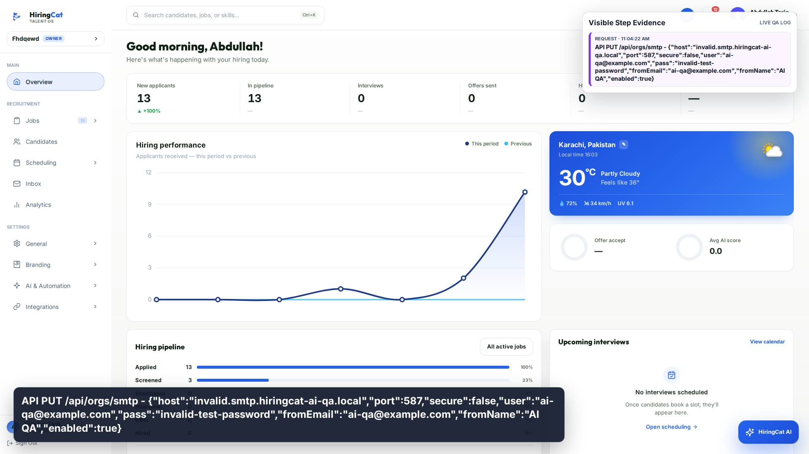
API PUT /api/orgs/smtp - {"host":"invalid.smtp.hiringcat-ai-qa.local","port":587,"secure":false,"user":"ai-qa@example.com","pass":"invalid-test-password","fromEmail":"ai-qa@example.com","fromName":"AI QA","enabled":true}
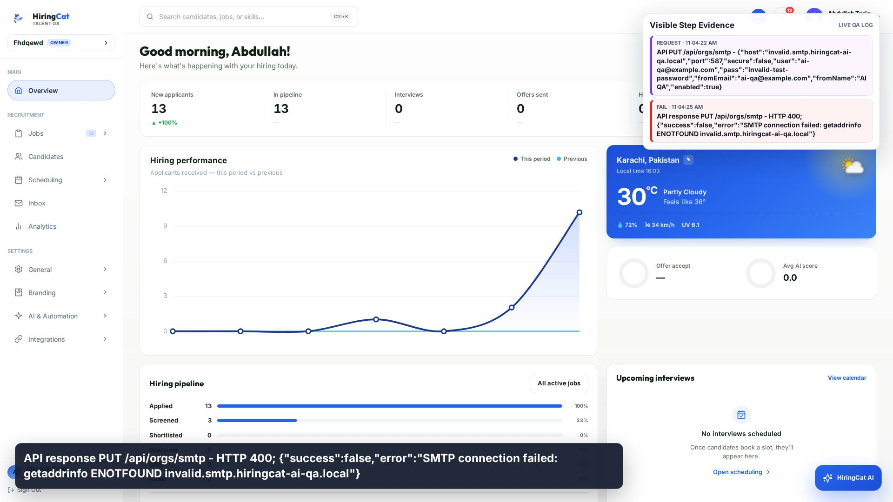
API response PUT /api/orgs/smtp - HTTP 400; {"success":false,"error":"SMTP connection failed: getaddrinfo ENOTFOUND invalid.smtp.hiringcat-ai-qa.local"}
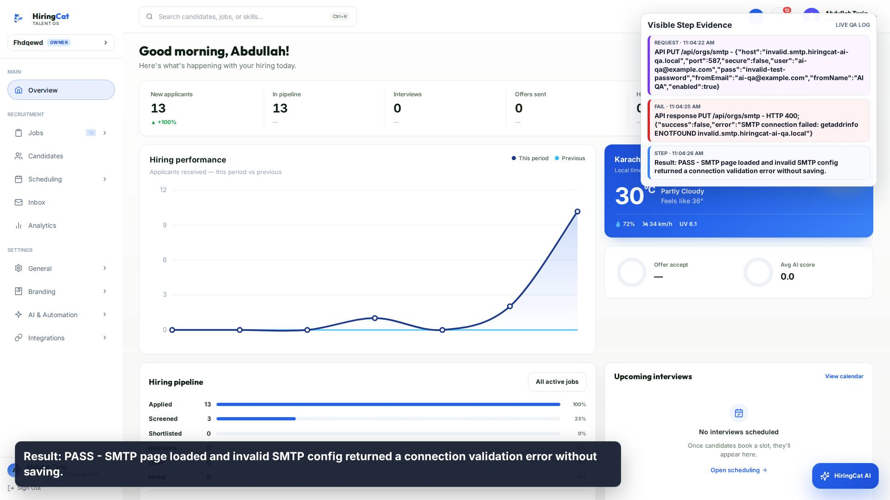
Result: PASS - SMTP page loaded and invalid SMTP config returned a connection validation error without saving.